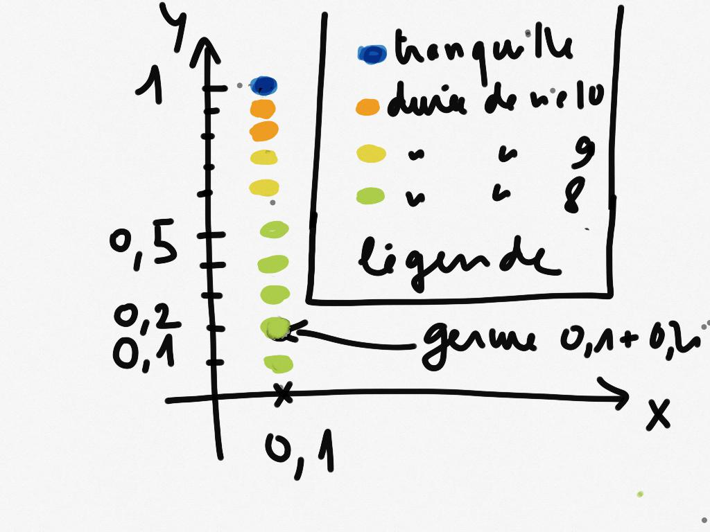
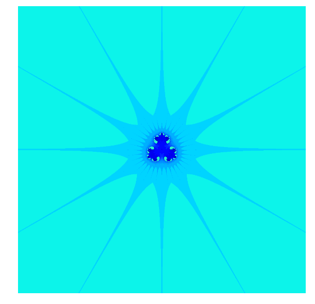

Des biomorphes dans le plan complexe
Sometimes I consider myself as a fisherman. Computer programs and ideas are my hooks, rods and reels. Computer pictures are the trophies and delicious meals.
Dans les années 80, par une erreur de programmation, Clifford Pickover, ingénieur chez IBM, a découvert accidentellement d'étranges organismes habitant le plan complexe.
J'avais déjà écrit un billet du même genre ici.
Sommaire
Une fonction
Je pars de la fonction suivante :
def f(z): return z**3+0.5
La suite associée
Puis je considère la suite à termes complexes définie par :
Du vocabulaire
J'introduis une terminologie un peu plus imagée :
- Le nombre \(u_0\) s'appelle le germe de la suite.
- La suite \((u_n)\) obtenue avec ce \(u_0\) s'appelle chemin de germe \(u_0\).
- Chaque terme de la suite s'appelle une étape du chemin de germe \(u_0\).
Je crée une petite fonction qui m'affiche à l'écran les étapes \(u_0,\dots,u_{10}\) du chemin de germe u. Notez que cette que la fonction ne fait que des affichages à l'écran : ce qui veut dire qu'elle ne contient aucun return.
def affiche_etapes(u): """ affiche les 10 premières étapes du chemin de germe u """ z = u print z for k in range(0,10): z = f(z) print z
Des germes qui s'épanouissent différemment
Regardons mainteant à quoi ressemblent ces étapes pour les germes
u =\(\dfrac{1+i}{10}\), puis v = \(\dfrac{1}{10} + i\).
u = 0.1+0.1j v = 0.1+1j affiche_etapes(u)
(0.1+0.1j) (0.498+0.002j) (0.623500016+0.001488016j) (0.74238290489+0.00173540549842j) (0.909144548014+0.00286930924827j) (1.25142534303+0.00711480576453j) (2.45962387367+0.0334263930208j) (15.3718639571+0.606626575308j) (3615.81197535+429.803790659j) (45269612832.1+16778490159.2j) (5.4540134647e+31+9.8430942148e+31j)
On constate que même avec un germe petit en module, la suite diverge très vite : la partie imaginaire de \(u_{10}\) est de l'ordre de \(10^{32}\) !
affiche_etapes(v)
(0.1+1j) (0.201-0.97j) (-0.059242099+0.79510609j) (0.612149526656-0.494289480722j) (0.280704025372-0.434905067102j) (0.362838889673-0.0205457121985j) (0.54730899572-0.00810598311135j) (0.663836956576-0.00728383947623j) (0.792433683119-0.00962912988368j) (0.997389212694-0.0181389765106j) (1.49120357853-0.0541271902603j)
Pour ce germe, la dynamique est très différente : les termes restent plutôt petits.
Germe tranquille ou explosif
Encore un peu de vocabulaire en lien avec les comportements précédemment observés :
Considérons un germe \(u_0\).
-
Si on a
\begin{equation*} \forall k\in\{0,\dots,10\} \left|\mathfrak{Re}\left(u_k\right)\right| \le 10 \quad \textbf{ ou } \quad \left|\mathfrak{Im}\left(u_k\right)\right| \le 10 \end{equation*}on dira que le germe \(u_0\) est tranquille.
-
Sinon, on dira que le germe \(u_0\) est explosif. Dans ce cas, le plus petit rang \(k\in\{0,\dots 10\}\) pour lequel
s'appelle la durée de vie du germe \(u_0\).
Par exemple, avec les calculs et notations précédents , le germe u est explosif et sa e durée de vie est 8, tandis que le germe v est tranquille.
Calculons des durées de vie
Je crée une fonction dureeDeVie(u) qui prend en entrée un nombre complexe u qui détermine si le germe u est tranquille ou explosif et retourne en sortie : 0 si le germe est tranquille, sinon il retourne sa durée de vie.
Pour cela :
- Je constate que je dois calculer au plus les dix premiers termes de la suite. Comme je ne sais pas combien de termes j'aurai à calculer, je programme une boucle while (je pourrais programmer une boucle for avec interruption de la boucle, mais on verra cela plus tard).
- Je vais commencer par formaliser la condition de sortie de boucle : je sors de la boucle quand \(k>10\) ou quand \(\left|\mathfrak{Re}\left(u_k\right)\right| > 10 \quad \textbf{ et } \quad \left|\mathfrak{Im}\left(u_k\right)\right| > 10\).
- La conditon de boucle est donc la négation de cette dernière, ce qui me donne la fonction suivante :
def dureeDeVie(u): """ retourne le plus petit rang n inférieur ou égal à 10 pour lequel la partie réelle et la partie imaginaire excèdent 10 strictement en valeur absolue. Si cet entier n'existe pas, on le pose égal à 0. """ z = u # on peut faire les deux d'un coup : z,k = u,0 k = 0 while k<= 10 and (abs(z.imag)<=10 or abs(z.real)<=10): z=f(z) k+=1 if k==11: return 0 else: return k
Je vérifie que ma fonction me donne bien pour les germes u et v précédents les valeurs que j'avais observé, à savoir : 8 et 0 respectivement :
dureeDeVie(u),dureeDeVie(v)
(8, 0)
Un petit dessin vaut mieux que bla bla ...
Je calcule par exemple la durée de vie des germes $ $ pour \(k = 1,..,10\)
for k in range(1,11): print 'germe : ' , 0.1*(1+ 1j*k), '. Durée de vie : ', dureeDeVie(0.1*(1+ 1j*k))
germe : (0.1+0.1j) . Durée de vie : 8 germe : (0.1+0.2j) . Durée de vie : 8 germe : (0.1+0.3j) . Durée de vie : 8 germe : (0.1+0.4j) . Durée de vie : 8 germe : (0.1+0.5j) . Durée de vie : 8 germe : (0.1+0.6j) . Durée de vie : 9 germe : (0.1+0.7j) . Durée de vie : 9 germe : (0.1+0.8j) . Durée de vie : 10 germe : (0.1+0.9j) . Durée de vie : 10 germe : (0.1+1j) . Durée de vie : 0
Je viens de calculer la durée de vie de 10 germes. Et si je les représentais dans le plan complexe et les coloriais en fonction de leur durée de vie ? J'obtiens le dessin suivant :
Mais Python peut le faire
Importation des modules
import numpy as np import matplotlib.pyplot as plt # Dans Spyder, remplacez la commande qui suit par : plt.ion() mais, #elle inutile je pense pour ceux qui ont une console interactive # (c-à-d prompt qui ressemble à In [1]: et pas >>> ) %matplotlib inline
Je vais faire faire le coloriage par Python :
A = np.array([[0,10,9,9,8,8,8,8,8]]).T # je crée ma colonne de points avec leur durée de vie. plt.figure(figsize=(3,3)) # je redimensionne le dessin plt.axis('off') # cache les axes plt.imshow(A,vmin=-3, vmax=15) # Je dessine

C'est quand même plus propre que mon dessin à la main, mais je ne vais pas m'arrêter en si bon chemin.
Il peut en faire plus
Je vais fabriquer une fonction qui prend en entrée :
- Un domaine rectangulaire du plan complexe représenté par une liste (xmin, xmax, xmin,ymax).
- Le nombre de subdivisions nx le long du segment [xmin, xmax]
- Le nombre de subdivisions ny le long du segment [ymin, ymax]
Et qui génère :
- Le tableau A contenant les durées de vie de tous les points de ce réseau, comme je l'avais fait à la main juste avant.
- L'affichage du coloriage correspondant
def coloriage( xmin, xmax, ymin, ymax, nx,ny ): X = np.linspace(xmin,xmax,nx) # je crée les subdivisons le long des X Y = np.linspace(ymax,ymin,ny) # idem le long des Y A = np.zeros((ny,nx)) # J'initialise un tableau de taille ny x nx for i in range(0,ny): for j in range(0,nx): A[i,j]= dureeDeVie(X[i]+1j*Y[j]) # je place en position [i,j] du tableau la durée de vie du germe A=12-A # Comme je veux colorier dans des teintes de bleu, je fais des A[0,0]=0 # petites transformations sur les coefficients de A A[1,1]=30 plt.figure(figsize=(10,10)) plt.axis('off') plt.imshow(A)
Enfin des images
Voici ce que cela donne si on prend des germes dont la partie réelle est entre xmin= -10 et xmax= 10. De même pour la partie imaginaire : ymin = - 10, et ymax =10. Je vais prendre des subdivisions de nx = ny = 1000 points, ce qui fait que mon réseau contient \(1000 \times 1000 =\) 1 million de germes. Bien que mon programme ne soit pas du tout optimisé pour calculer rapidement, ce calcul de 1 million de durées de vie est assez court (quelques secondes). Voici ce que cela donne :
xmin = -10 xmax = 10 ymin = -10 ymax = 10 nx = 1000 ny =1000 coloriage(xmin,xmax, ymin,ymax,nx,ny)
On obtient une sorte de radiolaire à 12 branches. Je peux zoomer dans le coeur du radiolaire :
coloriage(-2,2,-2,2,1000,1000)
Dans un autre billet, je vous montrerai d'autres biomorphes.